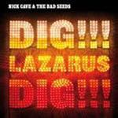

Music Reviews
-

Diamond Rings Free Dimensional
John O'Regan dons the Diamond Rings mantle for another set of shining electro-pop. But does the glare hide a lack of relevancy?
Joshua Pickard reviews... -

Paul Banks Banks
The enigmatic Interpol frontman has tweaked both his name and his tune. But is he finally ready to shed light over who he really is?
Juan Edgardo Rodríguez reviews... -
Sky Ferreira Ghost EP
Sky Ferreira's second EP finds the singer in the midst of a musical identity crisis. Rather than continue the electronic direction she established for herself, she has chosen to branch out down several different paths. While the songs are a significant improvement over her first EP, the lack of cohesion holds this record back.
Joe Marvilli thinks this EP's title is perfect for Halloween.... -
Trash Talk 119
While their are certainly plenty of intense moments to account for on 119, Trash Talk's latest album suggests that the California hardcore group are beginning to lose the balance they only recently perfected.
Peter Quinton talks some constructive criticism about Trash Talks latest release -

Nick Cave and the Bad Seeds Nocturama, Abattoir Blues/The Lyre of Orpheus/Dig!!! Lazarus, Dig!!! (Reissues)
The remaining portion of reissues for Nick Cave and the Bad Seeds were released August 14th. This group includes Nocturama (2003), Abattoir Blues/The Lyre Of Orpheus (2004) and Dig!!! Lazarus, Dig!!! (2008).
Sean Caldwell reviews... -

Titus Andronicus Local Business
The Monitor was an overwhelmingly successful sophomore effort from Titus Andronicus. Now on their much anticipated third outing, Titus Andronicus return with Local Business-- an album that seems to be a pretty substantial directional change for the band. Which leaves us all wondering, can the group pull off a hat trick? Or is Local Business dead in the water, just like the small enterprises of its namesake?
Andrew Ciraulo reviews....... -
Plateaus S/T
A decade ago, Plateaus, would have been something worth noting. They’ve cruised upon the wave of indie predecessors that were not just more creative, but more interesting as a consequence. More than anything this record is proof that trying to revive or replicate something which died for a reason - namely because it had been over-hashed – is extremely unwise.
Matt Bevington reviews... -

WHY? Mumps, Etc.
Finding a midpoint between his alt-rap beginnings and the poignant songwriting of 2009's Eskimo Snow, Yoni Wolf here begins to undermine the confessionalism of his former work, creating a jarring but idiosyncratic album.
Stephen Wragg reviews... -
Mac DeMarco 2
The Canadian singer-songwriter's follow-up to Rock n' Roll Nightclub is a more polished and refined take on his brand of minimalist rock.
Carlos Villareal reviews... -

Daphni Jiaolong
Dan Snaith drops the Caribou moniker to release a straight up dance record. But does it live up to the electro-pop perfection of the past few Caribou records?
Joshua Pickard reviews...